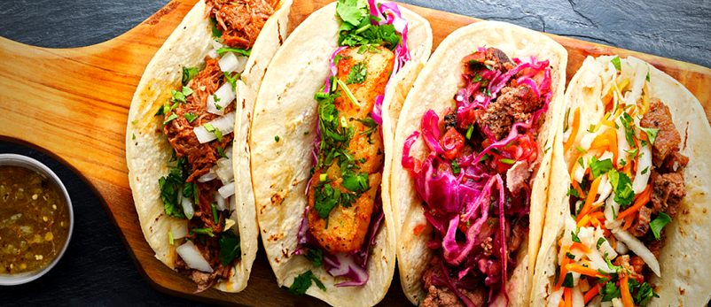
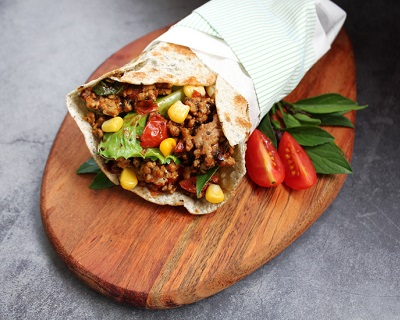
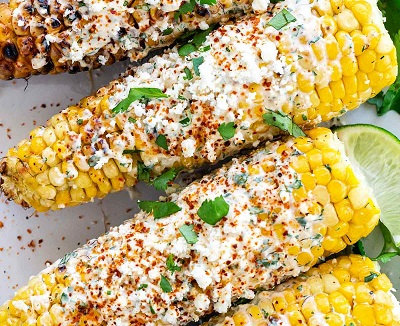
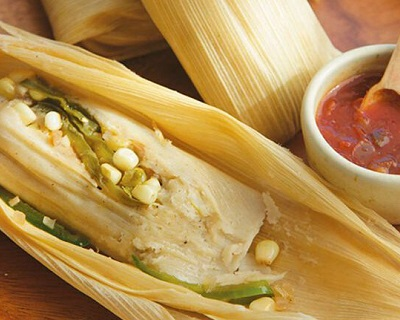

墨西哥Mexico


食物名稱：墨西哥捲餅
食物介紹：
它主要是將肉、豆、碎奶酪等食品和各種醬放在墨西哥薄餅上，並把餅捲起來完全包緊。
它與墨西哥夾餅類似，但夾餅只是用薄餅將裡面的食物包裹住一半，而並非全部。
卷餅所用的餅通常比夾餅的餅要軟得多也大得多。要是為了更方便地包緊食物。
卷餅在包括墨西哥和美國在內的美洲地區十分流行，
並根據當地風俗演化成各種樣式。

食物名稱： 墨西哥烤玉米
食物介紹：
玉米最早起源於墨西哥南部地區，是印地安人培育的主要糧食作物。
「elote」，被稱為「墨西哥街頭玉米」，
是一款非常有人氣的墨西哥街邊小吃。
在烤好的玉米上塗上蛋黃醬，撒上香料、奶酪和香菜，擠上青檸汁，就可以享用。

食物名稱：墨西哥粽
食物介紹：
墨西哥粽子在美洲有著相當悠久的傳統
和我們熟悉的肉粽有類似的外觀都是用植物的葉子包裹著調味過的肉、澱粉等等拿去蒸煮。
不過和台灣的肉粽不同之處在於，
墨西哥粽子主要是玉米粉揉捻成的麵團包裹著絞肉、起司、蔬菜、水果和最最最重要的靈魂般的食材—辣椒於內，
而外面則是主要是以玉米莢，有些區域則習慣用香蕉葉包覆。
之後再簡單的以棉繩或者一小片葉子捆好固定，
蒸煮之後就可以食用。
<